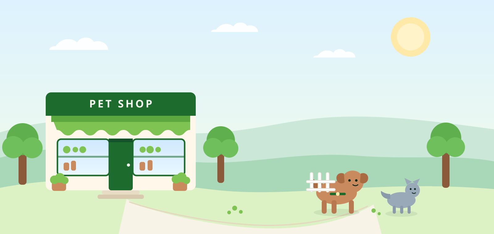

A lista não fala
Você tem 1.200 contatos e nenhuma pista de quem está atrasado, quem é VIP ou quem pediu para não receber.
A Gina lê o ritmo de compra de cada cliente, mostra quem está se afastando e organiza a próxima conversa — dentro do CRM que você já usa. Nada sai sem a sua aprovação.
Sem disparo em massa. Sem mensagem sem consentimento.

Quem compra ração todo mês e quem marca banho a cada três semanas têm ciclos diferentes. A maioria das ferramentas trata todo mundo igual.
Você tem 1.200 contatos e nenhuma pista de quem está atrasado, quem é VIP ou quem pediu para não receber.
Mensagem para a base inteira irrita quem está em dia, derruba a margem e ensina o cliente a só comprar com desconto.
Sistema, planilha, WhatsApp e caderno. A decisão de quem contatar fica sempre para depois do balcão.
A Gina transforma histórico de compras em uma decisão simples e explicável — sem caixa-preta e sem mensagem automática.
Ver os serviçosA mediana entre compras, não a média. Um intervalo de 3 dias e um de 30 contam histórias diferentes — e a Gina sabe disso.
Quem passou do próprio ritmo, quem é VIP, quem está em descanso e quem está bloqueado por consentimento.
A Gina não envia nada. Ela prepara a tarefa e explica o porquê; o dono decide e conversa.
Pet shop não é só venda de produto: é rotina, cuidado e recorrência. Quando o cliente muda o ritmo, a Gina percebe antes de ele desaparecer.
Exemplo com dados sintéticos de um pet shop.
Última compra há 60 dias · ritmo habitual de 31 dias.
Último banho há 18 dias · ritmo habitual de 21 dias.
VIP em atraso nunca entra em automação genérica: vira tarefa pessoal do dono.
Nada de mensagem em massa para quem está em dia. O foco é quem realmente pede atenção.
Ritmo, recência, VIP e consentimento são calculados por regras. A explicação mostra a conta.
Sem prova de consentimento, o cliente fica bloqueado — mesmo que seja VIP.
Você não precisa trocar de CRM. O diagnóstico mostra onde o dinheiro está sendo perdido; o piloto prova o método com a sua base.
Para entender onde o seu negócio está perdendo clientes.
Para provar o método com a sua base, com métrica combinada antes de começar.
Para manter a régua afinada e testar novas ideias.
A mesma lógica roda no laboratório de engenharia e no CRM. Regras auditáveis, testes adversariais e uma regra acima de todas: consentimento antes de qualquer contato.
Se a sua dúvida não estiver aqui, me chama no WhatsApp. Respondo pessoalmente.
Não. O método roda dentro do CRM que você já usa — Salesforce, HubSpot ou uma planilha. A Gina se adapta ao que existe, não o contrário.
Serve. Quanto mais recorrente o negócio, mais sentido faz. Pet shop, clínica, salão, academia e loja de suplementos são bons exemplos.
Não. Cada envio passa pela sua aprovação. A Gina prepara a tarefa e explica o motivo; quem conversa com o cliente é você.
A Gina bloqueia o contato e mostra o que falta. No diagnóstico, organizamos a prova de consentimento (data e texto aceito) antes de qualquer campanha.
Depende do tamanho da base e do escopo. Depois do diagnóstico, você recebe uma proposta com valor fechado. Sem letra miúda.
Me conta em poucas linhas como é o seu pet shop. Eu respondo com os próximos passos — e com uma pergunta que quase ninguém faz: qual é o ritmo dos seus clientes?